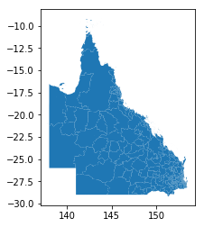
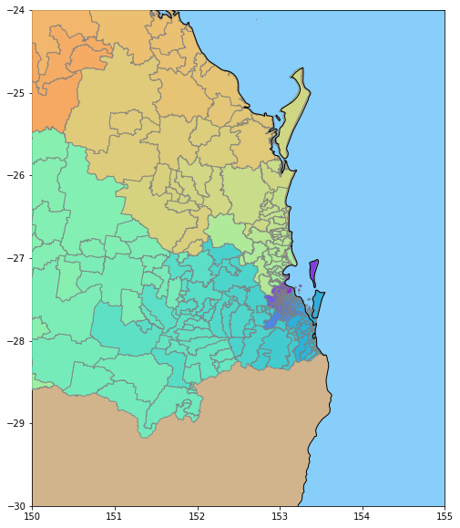
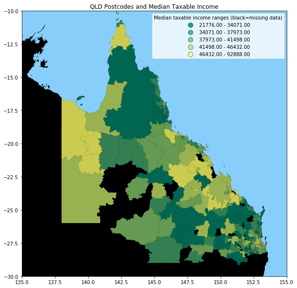

Income Distribution in Queensland
Introduction
As a finger exercise in learning GeoPandas, I thought I would explore the geospatial distribution of income in Queensland. I learned a few lessons in the process, but the difficulty of getting consistent data was one of the most important take-aways.
Post Codes
The Australian Bureau of Statistics publishes shapefiles of a range of boundaries (State, Local Government), and included in these are the PostCode boundaries (think ZIP Codes). At the time I built this notebook, the latest I could find was 2011 boundaries. Maybe PostCode boundaries don't change all that often.
Search for Australian Statistical Geography Standard (ASGS): Volume 3 - Non ABS Structures , you might a more up-to-date version.
So skipping the imports (that I will show at the end), to load the PostCode boundaries:
import geopandas as gpd
postcode_df = gpd.read_file
('../data/shapefiles/POA_2011_AUST.shp')
To show a thumbnail of the Queensland PostCodes, we filter to keep all PostCodes where the first character of the PostCode name starts with a digit '4'.
postcode_df[postcode_df['POA_NAME'].str[0]=='4'].plot()
to give a figure:

PostCodes Data Quality
We might assume that because the ABS has published these PostCode boundaries, that there wouldn't be any problems with
data quality, but there are still some gotcha-s. The first is that the ABS seems to have some standard categories they use
for ill-defined data. We can find these by filtering to show
all entries in the GeoPandas dataframe with no geometry attributes. We define a new GeoPandas dataframe called badpc
badpc = postcode_df[postcode_df['geometry'].isnull()]
which gives us:
| POA_CODE | POA_NAME | SQKM | geometry | |
|---|---|---|---|---|
| 2513 | 9191 | Unclassified (Aust.) | 0.0 | None |
| 2514 | 9494 | No usual address (Aust.) | NaN | None |
| 2515 | 9797 | Migratory - Offshore - Shipping (Aust.) | NaN | None |
In order to make life easier, we define a new GeoPandas dataframe, being those rows that do have a geometry defined. We make a deep copy, because the data is not huge, and some subsequent Pandas operations don't work on a filtered view of the original dataframe.
goodpc =
postcode_df[postcode_df['geometry'].notnull()].copy(deep=True)
Next we load up some coastline data, from shapefile downloaded from www.naturalearthdata.com/downloads/
world =
gpd.read_file('../data/shapefiles/ne_10m_admin_0_countries.shp')
Plotting the PostCodes
The following code fragment will show the Post Codes of South East Queensland. Note the use of the zorder parameter to make sure the graphic we create is not overwritten by a subsequent plot() call.
fig, ax = plt.subplots(figsize=(14,10) )
# set aspect to equal. This is done automatically
# when using *geopandas* plot on it's own, but not when
# working with pyplot directly.
ax.set_aspect('equal')
# define our default colors
water = 'lightskyblue'
earth = 'tan'
# set limits of plot to SE QLD
ax.set_xlim([150, 155])
ax.set_ylim([-30, -24])
# make water the default color
ax.set_facecolor(water)
# just get the GeoSeries of the world - maybe faster to plot?
world_gs = world['geometry']
# use geopandas to filter out all but postcodes starting with 4
qld_pc = postcode_df[postcode_df['POA_NAME'].str[0]=='4']
# plot the areas NOT covered by postcodes (ie Not QLD)
world_gs.plot(ax = ax, linewidth=1, facecolor=earth, alpha=1 )
# plot the postcodes of Qld, each a different color
qld_pc.plot(ax = ax, linewidth=1, zorder=4, alpha=0.8,
cmap='rainbow', edgecolor='gray')
# plot the coastlines
world_gs.plot(ax = ax, linewidth=1, facecolor='none',
alpha=1, zorder=5 )
The result looks like:

If you very closely, you can see a few scattered islands that are too small to be in the world coastline database, but are captured in the post Code boundary database.
So far so good, now onto income data!
Income Data
The Australian Government provides tax summary data through www.data.gov.au. In their schema, the data we want is at:
Organisations / Australian Taxation Office / Taxation Statistics 2013-14 / Individuals - Table 8
This will provide access to a large Excel spreadsheet called
taxstats2014individual08taxableincomebypostcode.xlsx, that contains a worksheet named Table 8. Having downloaded this we can then start processing this with GeoPandas. Note the date discrepency between 2011 for PostCodes, and 2014 for the tax data; we will come back to this later.
We create a dataframe of ATO data by:
atodf =
pd.read_excel('../data/
taxstats2014individual08taxableincomebypostcode.xlsx',
sheet_name='Table 8',\
skiprows=2)
ATO in this context is short for Australian Taxation Office.
The standard data-exploration command atodf.head() yields output that looks (in part) like:
| State/ Territory | Postcode2 | Individuals 2003–04 no. | Median3 taxable income 2003–04 $ | |
|---|---|---|---|---|
| 0 | ACT | 2600 | 5692 | 42327 |
Dataframe Exploration
So we have the PostCodes we want, and the Median taxable income earned by the taxpayers who live in that PostCode. Note that the income could have earned by activities in a PostCode different from where the taxpayer lives, but I have chosen to ignore this.
So lets do a bit more data exploration, finding the count of unique PostCode names in each dataframe (atodf holding tax data, and goodpc holding PostCode boundary data).
len(atodf['Postcode2'].unique())
Out[21]:
2203
len(goodpc['POA_CODE'].unique())
Out[22]:
2513
And here's a problem; why are the number of unique PostCodes so different between each dataframe? Lets look at the first row in each dataframe, tax data first:
In [23]:
atodf['Postcode2'][0]
Out[23]:
2600
and then PostCode data:
goodpc['POA_CODE'][0]
Out[24]:
'0800'
First we fix the fact that the goodpc dataframe has the PostCode as a string, and the atodf dataframe uses integers. I decided to standardize on integers, by:
goodpc['POA_CODE'] = goodpc['POA_CODE'].astype(int)
So now, we find the differences in PostCodes, by:
set1 = set(atodf['Postcode2'].unique())
set2 = set(goodpc['POA_CODE'].unique())
diff1 = set1.difference(set2)
diff2 = set2.difference(set1)
Now, to show the PostCodes that the Tax Office knows about, but the Bureau of Stats doesn't:
print(' In ato, but not abs', diff1)
In ato, but not abs {801, 804, 871, 811, 2379, 814, 881, 3665, 851, 821, 861, 831}
And the PostCodes the Bureau of Stats knows, that don't appear in the Tax Office spreadsheet:
print(' in abs, but not ato', diff2)
in abs, but not ato {3586, 2563, 2052, 3588, 3589, 3591, ....
In fact, there are 322 PostCodes in the latter set.
Explanation
In fact, poking into the websites of both Government agencies, reasons emerge for the differences. First of all, some of the PostCodes known to the ATO could have been created after 2011 (the date of the ABS data).
The ATO spreadsheet excludes PostCodes with so few people, that data privacy issues preclude including that data. As we will see, this means that some PostCodes for remote areas (very sparsely settled) will have no income data.
Further, exploring the PostCode documentation reveals that the Post Office can create PostCodes to support more efficient sorting of mail (e.g. in response to a "mail this card to this address for a free gift" style advertising campaign). No-one thinks that they actually live in these PostCodes, so these PostCodes will also have no income data.
Dataframe Merging
Because we want to draw a map, we want to keep income data for only those PostCode we have a boundary for, by:
mask = atodf['Postcode2'].isin(list(diff1))
goodato_df = atodf[~mask].copy(deep=True)
In the above, we create a mask that is True for PostCodes for which we don't have a boundary, and then we copy the dataframe rows for all the other PostCodes (for which we do have a boundary).
We now rename the PostCode column so the names are the same in each dataframe, by:
goodato_df.rename(columns={'Postcode2':'POA_CODE'}, inplace=True)
We can now merge the columns of the two dataframes side by side, by:
result = pd.merge(goodato_df, goodpc, how='left', on=['POA_CODE'])
A closer inspection shows us that the column titles have newlines embedded (a left-over glitch from the original Excel spreadsheet).
result.columns.values
Out[40]:
array(['State/\nTerritory', 'POA_CODE', 'Individuals 2003–04\nno.',
'Median3 taxable income 2003–04\n$',
'Mean3 taxable income 2003–04\n$', 'Individuals 2013–14\nno.',
'Median3 taxable income 2013–14\n$',
'Mean3 taxable income 2013–14\n$', 'Median growth\n%',
'Mean growth\n%', 'POA_NAME', 'SQKM', 'geometry'], dtype=object)
So we remove these, by:
new_cols = [s.replace('\n','') for s in result.columns.values]
result.columns = new_cols
result.columns.values
Out[44]:
array(['State/Territory', 'POA_CODE', 'Individuals 2003–04no.',
'Median3 taxable income 2003–04$', 'Mean3 taxable income 2003–04$',
'Individuals 2013–14no.', 'Median3 taxable income 2013–14$',
'Mean3 taxable income 2013–14$', 'Median growth%', 'Mean growth%',
'POA_NAME', 'SQKM', 'geometry'], dtype=object)
Finally, we have to convert our results dataframe to a GeoPandas dataframe, by:
r2 = gpd.GeoDataFrame(result)
Drawing the Map
The following code fragment will produce the map below:
fig, ax = plt.subplots(figsize=(14,10) )
# set aspect to equal. This is done automatically
# when using *geopandas* plot on it's own, but not when
# working with pyplot directly.
ax.set_aspect('equal')
# define our default colors
water = 'lightskyblue'
earth = 'tan'
# set limits of plot to QLD
ax.set_xlim([135, 155])
ax.set_ylim([-30, -10])
# make water the default color
ax.set_facecolor(water)
# just get the GeoSeries of the world - maybe faster to plot?
world_gs = world[world['ADMIN']=='Australia']['geometry']
# use geopandas to filter out all but postcodes starting with 4
qld_pc = r2[r2['POA_NAME'].str[0]=='4']
world_gs.plot(ax = ax, linewidth=1, facecolor='black', alpha=1 )
qld_pc.plot(ax = ax, linewidth=0, zorder=4, alpha=0.8, cmap='summer', column='Median3 taxable income 2013–14$', \
scheme='quantiles', k= 5, legend=True)
leg = ax.get_legend()
leg.set_bbox_to_anchor((0.8, 0.8, 0.2, 0.2))
leg.set_title('Median taxable income ranges (black=missing data)', )
ax.set_title('QLD Postcodes and Median Taxable Income')
In this code, we use the facility for GeopPandas to prepare a map with a scheme of quantiles. We set the world land background to black (representing missing data),
and then overwrite this with our PostCode shaded by income quantile. We just show the Queensland PostCodes. We ask for a legend, and manually position it in the Coral Sea (inside the area of the map).
This gives us:

It appears that high income is associated (outside Brisbane, the capital city in the South East) with areas with a mining industry.
Conclusion
For completeness, here are the imports for this Jupyter Notebook (not all are used in the code fragments above, as some as for producing output to support reproducability).
# all imports should go here
import pandas as pd
import sys
import os
import subprocess
import datetime
import platform
import datetime
import matplotlib as mpl
import matplotlib.pyplot as plt
from mpl_toolkits.basemap import Basemap
import geopandas as gpd
import shapely
from shapely.geometry import Polygon
import numpy as np
from matplotlib.collections import PatchCollection
from descartes import PolygonPatch